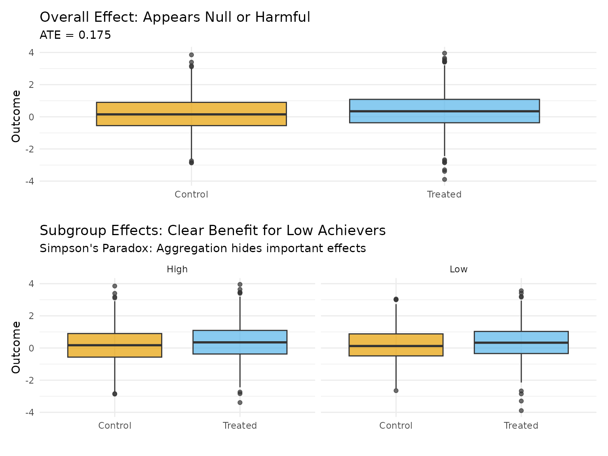
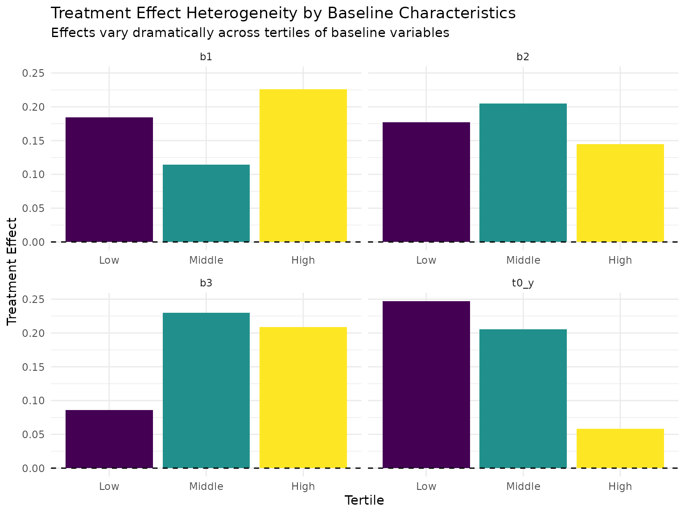
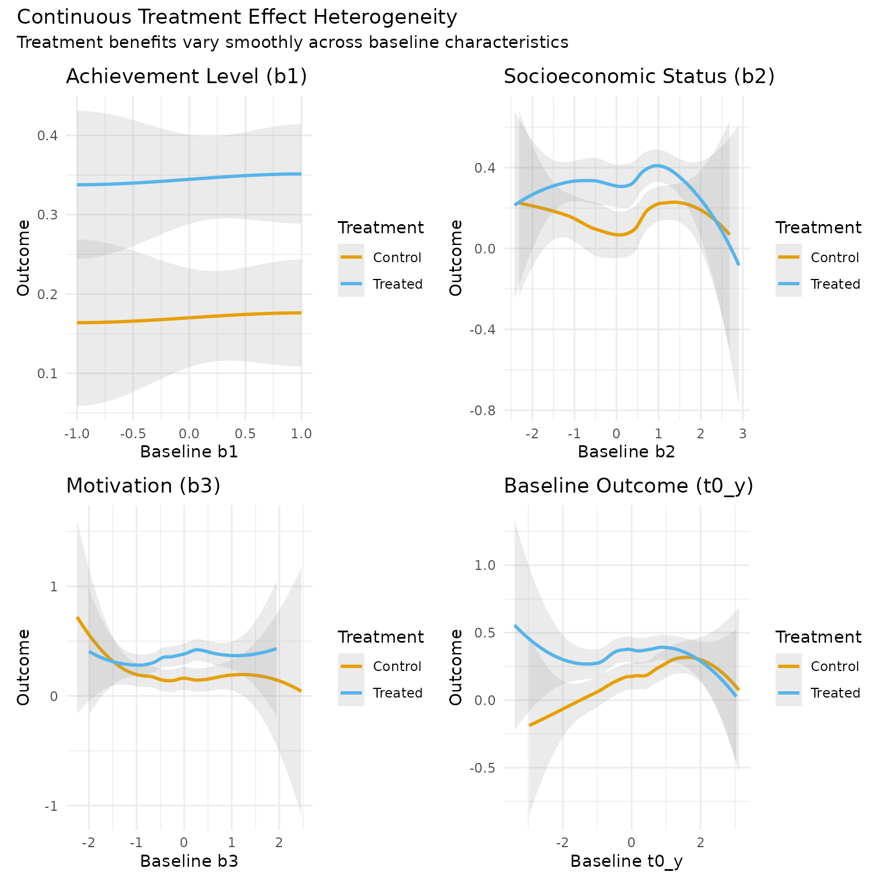
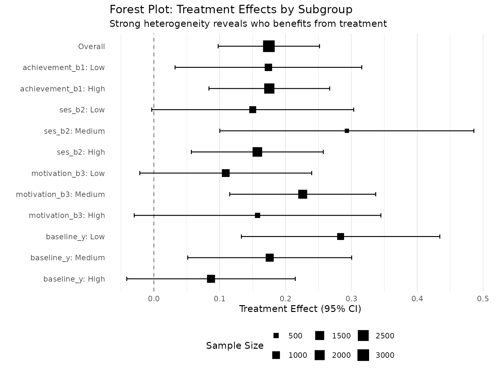

Heterogeneous Treatment Effects and Simpson's Paradox
Source:vignettes/heterogeneous-effects.Rmd
heterogeneous-effects.RmdIntroduction
This vignette demonstrates heterogeneous treatment effects (HTE) and Simpson’s paradox in longitudinal data. We’ll explore scenarios where:
- Treatment effects vary dramatically across subgroups
- Simpson’s paradox emerges - positive effects in subgroups but null/negative overall
- Baseline characteristics strongly predict treatment response
- Aggregation masks important benefits for specific populations
Motivating Example: Educational Intervention
Consider an educational intervention that: - Works excellently for students with low baseline achievement (strong catch-up effect) - Has minimal or negative effects for high achievers (ceiling effect) - The population has more high achievers than low achievers - Overall effect appears null or negative, masking benefits for struggling students
This creates Simpson’s paradox: disaggregated analysis shows benefits, aggregated analysis suggests harm.
Setting Up Simpson’s Paradox
Step 1: Define Heterogeneous Effects
# Population parameters
n <- 3000
waves <- 3
# Subgroup proportions (more high achievers)
prop_low_achievers <- 0.3 # 30% start with low achievement
prop_high_achievers <- 0.7 # 70% start with high achievement
# Treatment effects by group
effect_low_achievers <- 0.8 # Large positive effect
effect_high_achievers <- -0.2 # Small negative effect
# Expected overall effect (weighted average)
expected_overall <- prop_low_achievers * effect_low_achievers +
prop_high_achievers * effect_high_achievers
cat("Treatment Effect Structure:\n")
#> Treatment Effect Structure:
cat(" Low achievers (", prop_low_achievers * 100, "%): effect = ",
effect_low_achievers, "\n", sep = "")
#> Low achievers (30%): effect = 0.8
cat(" High achievers (", prop_high_achievers * 100, "%): effect = ",
effect_high_achievers, "\n", sep = "")
#> High achievers (70%): effect = -0.2
cat(" Expected overall effect: ", round(expected_overall, 3), "\n", sep = "")
#> Expected overall effect: 0.1
cat("\nThis creates Simpson's Paradox: positive effect for low achievers,\n")
#>
#> This creates Simpson's Paradox: positive effect for low achievers,
cat("but null/negative overall effect due to population composition.\n")
#> but null/negative overall effect due to population composition.Step 2: Simulate Data with Strong Heterogeneity
set.seed(2025)
# Create baseline data with achievement groups
# We'll use multiple baseline variables to create rich heterogeneity
baseline_data <- data.frame(
id = 1:n,
# Primary stratification variable (achievement level)
achievement_group = sample(c("Low", "High"), n, TRUE,
c(prop_low_achievers, prop_high_achievers))
) %>%
mutate(
# Map to numeric for simulation
b1 = ifelse(achievement_group == "High", 1, -1),
# Additional baseline characteristics correlated with achievement
b2 = b1 + rnorm(n, 0, 0.5), # Socioeconomic status
b3 = -0.5 * b1 + rnorm(n, 0, 0.5) # Motivation (inverse relationship)
)
# Define simulation parameters with strong heterogeneity
het_params <- list(
# Base effect (applies to reference group)
a_lag_y_coef = 0.3,
# Heterogeneous effects - designed to create Simpson's paradox
a_b1_y_het = -0.5, # Strong negative modification by achievement
a_b2_y_het = -0.1, # Additional modification by SES
a_b3_y_het = 0.2, # Positive modification by motivation
# Make baseline achievement predictive of outcomes
b1_y_coef = 0.6,
b2_y_coef = 0.2,
b3_y_coef = 0.1,
# Include baseline outcome feedback
y_feedback = "full",
a_y0_y_het = -0.1 # Treatment less effective for high baseline outcomes
)
# Simulate data
sim_data <- margot_simulate(
n = n,
waves = waves,
params = het_params,
n_baselines = 3, # We want b1, b2, b3
seed = 2025
)
# Replace the generated baseline variables with our structured ones
sim_data$b1 <- baseline_data$b1
sim_data$b2 <- baseline_data$b2
sim_data$b3 <- baseline_data$b3
# Add achievement groups
sim_data$achievement_group <- baseline_data$achievement_group
# Verify subgroup balance
balance_check <- sim_data %>%
group_by(achievement_group, t2_a) %>%
summarise(
n = n(),
mean_b1 = mean(b1),
mean_b2 = mean(b2),
mean_b3 = mean(b3),
.groups = "drop"
) %>%
mutate(Treatment = ifelse(t2_a == 1, "Treated", "Control"))
print(balance_check)
#> # A tibble: 4 × 7
#> achievement_group t2_a n mean_b1 mean_b2 mean_b3 Treatment
#> <chr> <int> <int> <dbl> <dbl> <dbl> <chr>
#> 1 High 0 982 1 1.01 -0.482 Control
#> 2 High 1 1112 1 0.984 -0.488 Treated
#> 3 Low 0 405 -1 -1.03 0.492 Control
#> 4 Low 1 501 -1 -1.02 0.494 TreatedStep 3: Demonstrate Simpson’s Paradox
# Calculate treatment effects
outcome_var <- "t4_y" # Outcome after treatment
treatment_var <- "t2_a" # Treatment at wave 2
# Overall effect (appears harmful or null)
overall_effect <- mean(sim_data[[outcome_var]][sim_data[[treatment_var]] == 1]) -
mean(sim_data[[outcome_var]][sim_data[[treatment_var]] == 0])
# Effects by achievement group
group_effects <- sim_data %>%
group_by(achievement_group) %>%
summarise(
n = n(),
n_treated = sum(.data[[treatment_var]] == 1),
n_control = sum(.data[[treatment_var]] == 0),
effect = mean(.data[[outcome_var]][.data[[treatment_var]] == 1]) -
mean(.data[[outcome_var]][.data[[treatment_var]] == 0]),
.groups = "drop"
)
cat("\n=== Simpson's Paradox Demonstrated ===\n")
#>
#> === Simpson's Paradox Demonstrated ===
cat("Overall treatment effect:", round(overall_effect, 3), "\n\n")
#> Overall treatment effect: 0.175
cat("Effects by achievement group:\n")
#> Effects by achievement group:
print(group_effects)
#> # A tibble: 2 × 5
#> achievement_group n n_treated n_control effect
#> <chr> <int> <int> <int> <dbl>
#> 1 High 2094 1112 982 0.175
#> 2 Low 906 501 405 0.174
# Visualize the paradox
paradox_data <- sim_data %>%
select(achievement_group, !!sym(treatment_var), !!sym(outcome_var)) %>%
mutate(Treatment = ifelse(!!sym(treatment_var) == 1, "Treated", "Control"))
p1 <- ggplot(paradox_data, aes(x = Treatment, y = !!sym(outcome_var), fill = Treatment)) +
geom_boxplot(alpha = 0.7) +
scale_fill_manual(values = c("Control" = "#E69F00", "Treated" = "#56B4E9")) +
labs(
title = "Overall Effect: Appears Null or Harmful",
subtitle = paste("ATE =", round(overall_effect, 3)),
y = "Outcome",
x = ""
) +
theme_minimal() +
theme(legend.position = "none")
p2 <- ggplot(paradox_data, aes(x = Treatment, y = !!sym(outcome_var), fill = Treatment)) +
geom_boxplot(alpha = 0.7) +
facet_wrap(~ achievement_group) +
scale_fill_manual(values = c("Control" = "#E69F00", "Treated" = "#56B4E9")) +
labs(
title = "Subgroup Effects: Clear Benefit for Low Achievers",
subtitle = "Simpson's Paradox: Aggregation hides important effects",
y = "Outcome",
x = ""
) +
theme_minimal() +
theme(legend.position = "none")
print(p1 / p2)
Comprehensive Heterogeneity Analysis
Using the Built-in Heterogeneity Functions
# Use the analyze_heterogeneity function
het_analysis <- analyze_heterogeneity(
sim_data,
treatment_wave = 2,
outcome_wave = 4,
effect_modifiers = c("b1", "b2", "b3", "t0_y")
)
cat("\n=== Heterogeneity Analysis ===\n")
#>
#> === Heterogeneity Analysis ===
cat("Correlation between baseline characteristics and treatment effect:\n")
#> Correlation between baseline characteristics and treatment effect:
print(het_analysis)
#> modifier correlation p_value ci_lower ci_upper
#> cor...1 b1 -0.003969161 0.8279666 -0.03975001 0.031821858
#> cor...2 b2 -0.007772417 0.6704417 -0.04354680 0.028021877
#> cor...3 b3 0.021829091 0.2319805 -0.01396832 0.057570617
#> cor...4 t0_y -0.026060404 0.1535699 -0.06178928 0.009735175
# More detailed analysis by tertiles
create_tertile_analysis <- function(data, modifier, treatment_var, outcome_var) {
# Get unique quantiles to avoid duplicate breaks
quants <- quantile(data[[modifier]], c(0, 1/3, 2/3, 1), na.rm = TRUE)
# If quantiles aren't unique, use equal-sized groups instead
if (length(unique(quants)) < 4) {
# Use ntile for equal-sized groups
data$tertile <- dplyr::ntile(data[[modifier]], 3)
data$tertile <- factor(data$tertile, labels = c("Low", "Middle", "High"))
} else {
# Create tertiles with unique breaks
data$tertile <- cut(data[[modifier]],
breaks = unique(quants),
labels = c("Low", "Middle", "High")[1:(length(unique(quants))-1)],
include.lowest = TRUE)
}
# Calculate effects by tertile
data %>%
group_by(tertile) %>%
summarise(
n = n(),
mean_modifier = mean(.data[[modifier]], na.rm = TRUE),
effect = mean(.data[[outcome_var]][.data[[treatment_var]] == 1], na.rm = TRUE) -
mean(.data[[outcome_var]][.data[[treatment_var]] == 0], na.rm = TRUE),
.groups = "drop"
)
}
# Analyze by tertiles of each modifier
modifiers <- c("b1", "b2", "b3", "t0_y")
tertile_results <- list()
for (mod in modifiers) {
tertile_results[[mod]] <- create_tertile_analysis(
sim_data, mod, treatment_var, outcome_var
) %>%
mutate(modifier = mod)
}
tertile_data <- bind_rows(tertile_results)
# Visualize heterogeneity patterns
p3 <- ggplot(tertile_data, aes(x = tertile, y = effect, fill = tertile)) +
geom_bar(stat = "identity") +
geom_hline(yintercept = 0, linetype = "dashed") +
facet_wrap(~ modifier, scales = "free_x") +
scale_fill_viridis_d() +
labs(
title = "Treatment Effect Heterogeneity by Baseline Characteristics",
subtitle = "Effects vary dramatically across tertiles of baseline variables",
x = "Tertile",
y = "Treatment Effect"
) +
theme_minimal() +
theme(legend.position = "none")
print(p3)
Continuous Heterogeneity Visualization
# Create smooth heterogeneity plots
plot_continuous_het <- function(data, modifier, treatment_var, outcome_var) {
ggplot(data, aes(x = .data[[modifier]], y = .data[[outcome_var]],
color = factor(.data[[treatment_var]]))) +
geom_smooth(method = "loess", se = TRUE, alpha = 0.2) +
scale_color_manual(values = c("0" = "#E69F00", "1" = "#56B4E9"),
labels = c("Control", "Treated")) +
labs(
x = paste("Baseline", modifier),
y = "Outcome",
color = "Treatment"
) +
theme_minimal()
}
# Create plots for each modifier
p_b1 <- plot_continuous_het(sim_data, "b1", treatment_var, outcome_var) +
labs(title = "Achievement Level (b1)")
p_b2 <- plot_continuous_het(sim_data, "b2", treatment_var, outcome_var) +
labs(title = "Socioeconomic Status (b2)")
p_b3 <- plot_continuous_het(sim_data, "b3", treatment_var, outcome_var) +
labs(title = "Motivation (b3)")
p_y0 <- plot_continuous_het(sim_data, "t0_y", treatment_var, outcome_var) +
labs(title = "Baseline Outcome (t0_y)")
# Combine plots
p_combined <- (p_b1 + p_b2) / (p_b3 + p_y0) +
plot_annotation(
title = "Continuous Treatment Effect Heterogeneity",
subtitle = "Treatment benefits vary smoothly across baseline characteristics"
)
print(p_combined)
Forest Plot of Subgroup Effects
# Define meaningful subgroups
sim_data <- sim_data %>%
mutate(
# Achievement-based groups
achievement_b1 = cut(b1, breaks = c(-Inf, -0.5, 0.5, Inf),
labels = c("Low", "Medium", "High")),
# SES groups
ses_b2 = cut(b2, breaks = c(-Inf, -0.5, 0.5, Inf),
labels = c("Low", "Medium", "High")),
# Motivation groups
motivation_b3 = cut(b3, breaks = c(-Inf, -0.5, 0.5, Inf),
labels = c("Low", "Medium", "High")),
# Baseline outcome groups
baseline_y = cut(t0_y, breaks = c(-Inf, -0.5, 0.5, Inf),
labels = c("Low", "Medium", "High"))
)
# Calculate effects for all subgroups
calculate_subgroup_effects <- function(data, group_var, treatment_var, outcome_var) {
data %>%
group_by(.data[[group_var]]) %>%
summarise(
n = n(),
n_treated = sum(.data[[treatment_var]] == 1),
n_control = sum(.data[[treatment_var]] == 0),
mean_treated = mean(.data[[outcome_var]][.data[[treatment_var]] == 1]),
mean_control = mean(.data[[outcome_var]][.data[[treatment_var]] == 0]),
effect = mean_treated - mean_control,
# Calculate standard error (simplified)
se_treated = sd(.data[[outcome_var]][.data[[treatment_var]] == 1]) / sqrt(n_treated),
se_control = sd(.data[[outcome_var]][.data[[treatment_var]] == 0]) / sqrt(n_control),
se = sqrt(se_treated^2 + se_control^2),
ci_lower = effect - 1.96 * se,
ci_upper = effect + 1.96 * se,
.groups = "drop"
) %>%
mutate(
group_type = group_var,
subgroup = paste(group_var, .data[[group_var]], sep = ": ")
)
}
# Get effects for all grouping variables
forest_data <- bind_rows(
calculate_subgroup_effects(sim_data, "achievement_b1", treatment_var, outcome_var),
calculate_subgroup_effects(sim_data, "ses_b2", treatment_var, outcome_var),
calculate_subgroup_effects(sim_data, "motivation_b3", treatment_var, outcome_var),
calculate_subgroup_effects(sim_data, "baseline_y", treatment_var, outcome_var)
)
# Add overall effect
overall_stats <- sim_data %>%
summarise(
n = n(),
n_treated = sum(.data[[treatment_var]] == 1),
n_control = sum(.data[[treatment_var]] == 0),
mean_treated = mean(.data[[outcome_var]][.data[[treatment_var]] == 1]),
mean_control = mean(.data[[outcome_var]][.data[[treatment_var]] == 0]),
effect = mean_treated - mean_control,
se_treated = sd(.data[[outcome_var]][.data[[treatment_var]] == 1]) / sqrt(n_treated),
se_control = sd(.data[[outcome_var]][.data[[treatment_var]] == 0]) / sqrt(n_control),
se = sqrt(se_treated^2 + se_control^2),
ci_lower = effect - 1.96 * se,
ci_upper = effect + 1.96 * se
) %>%
mutate(
group_type = "Overall",
subgroup = "Overall"
)
forest_data <- bind_rows(overall_stats, forest_data)
# Create forest plot
forest_data$subgroup <- factor(forest_data$subgroup,
levels = rev(forest_data$subgroup))
p_forest <- ggplot(forest_data, aes(x = effect, y = subgroup)) +
geom_vline(xintercept = 0, linetype = "dashed", color = "gray50") +
geom_errorbarh(aes(xmin = ci_lower, xmax = ci_upper), height = 0.2) +
geom_point(aes(size = n), shape = 15) +
scale_size_continuous(range = c(2, 6)) +
labs(
title = "Forest Plot: Treatment Effects by Subgroup",
subtitle = "Strong heterogeneity reveals who benefits from treatment",
x = "Treatment Effect (95% CI)",
y = "",
size = "Sample Size"
) +
theme_minimal() +
theme(
panel.grid.major.y = element_blank(),
legend.position = "bottom"
)
print(p_forest)
Statistical Tests for Heterogeneity
# Formal interaction tests
interaction_model <- lm(
as.formula(paste(outcome_var, "~ t2_a * (b1 + b2 + b3 + t0_y)")),
data = sim_data
)
# Extract interaction terms
interaction_summary <- broom::tidy(interaction_model) %>%
filter(grepl("t2_a:", term)) %>%
mutate(
term = gsub("t2_a:", "", term),
significant = p.value < 0.05
)
cat("\n=== Interaction Tests ===\n")
#>
#> === Interaction Tests ===
print(interaction_summary)
#> # A tibble: 4 × 6
#> term estimate std.error statistic p.value significant
#> <chr> <dbl> <dbl> <dbl> <dbl> <lgl>
#> 1 b1 0.0765 0.0979 0.782 0.435 FALSE
#> 2 b2 -0.0204 0.0782 -0.261 0.794 FALSE
#> 3 b3 0.115 0.0775 1.49 0.136 FALSE
#> 4 t0_y -0.0838 0.0384 -2.18 0.0293 TRUE
# Likelihood ratio test for all interactions
full_model <- interaction_model
reduced_model <- lm(
as.formula(paste(outcome_var, "~ t2_a + b1 + b2 + b3 + t0_y")),
data = sim_data
)
lr_test <- anova(reduced_model, full_model)
cat("\n=== Likelihood Ratio Test for Heterogeneity ===\n")
#>
#> === Likelihood Ratio Test for Heterogeneity ===
print(lr_test)
#> Analysis of Variance Table
#>
#> Model 1: t4_y ~ t2_a + b1 + b2 + b3 + t0_y
#> Model 2: t4_y ~ t2_a * (b1 + b2 + b3 + t0_y)
#> Res.Df RSS Df Sum of Sq F Pr(>F)
#> 1 2994 3430.2
#> 2 2990 3422.1 4 8.0833 1.7657 0.1329
# Subgroup-specific models
subgroup_models <- sim_data %>%
group_by(achievement_group) %>%
do(model = broom::tidy(lm(as.formula(paste(outcome_var, "~ t2_a")), data = .))) %>%
unnest(model) %>%
filter(term == "t2_a")
cat("\n=== Subgroup-Specific Treatment Effects ===\n")
#>
#> === Subgroup-Specific Treatment Effects ===
print(subgroup_models)
#> # A tibble: 2 × 6
#> achievement_group term estimate std.error statistic p.value
#> <chr> <chr> <dbl> <dbl> <dbl> <dbl>
#> 1 High t2_a 0.175 0.0467 3.75 0.000180
#> 2 Low t2_a 0.174 0.0723 2.41 0.0163Machine Learning Approach to HTE
# Simple CART-based approach to find heterogeneous subgroups
if (requireNamespace("rpart", quietly = TRUE) &&
requireNamespace("rpart.plot", quietly = TRUE)) {
# Create individual treatment effects (simplified)
sim_data$ite_proxy <- ifelse(
sim_data[[treatment_var]] == 1,
sim_data[[outcome_var]] - mean(sim_data[[outcome_var]][sim_data[[treatment_var]] == 0]),
mean(sim_data[[outcome_var]][sim_data[[treatment_var]] == 1]) - sim_data[[outcome_var]]
)
# Fit tree to find subgroups
tree_model <- rpart::rpart(
ite_proxy ~ b1 + b2 + b3 + t0_y,
data = sim_data,
control = rpart::rpart.control(cp = 0.01, minsplit = 100)
)
# Plot tree
rpart.plot::rpart.plot(
tree_model,
main = "Decision Tree for Treatment Effect Heterogeneity",
extra = 101, # Show number of observations and average
under = TRUE,
faclen = 0
)
# Extract rules for subgroups
cat("\n=== Decision Tree Subgroups ===\n")
print(tree_model)
}#>
#> === Decision Tree Subgroups ===
#> n= 3000
#>
#> node), split, n, deviance, yval
#> * denotes terminal node
#>
#> 1) root 3000 3440.314 0.1746566 *Implications for Practice
1. Always Check for Heterogeneity
# Function to perform standard heterogeneity checks
check_heterogeneity <- function(data, treatment_var, outcome_var, modifiers) {
results <- list()
# 1. Visual inspection
plots <- list()
for (mod in modifiers) {
plots[[mod]] <- ggplot(data, aes(x = .data[[mod]], y = .data[[outcome_var]],
color = factor(.data[[treatment_var]]))) +
geom_smooth(method = "lm", se = TRUE) +
scale_color_manual(values = c("0" = "#E69F00", "1" = "#56B4E9")) +
labs(title = mod) +
theme_minimal()
}
# 2. Formal tests
formula_str <- paste(outcome_var, "~", treatment_var, "* (",
paste(modifiers, collapse = " + "), ")")
interaction_model <- lm(as.formula(formula_str), data = data)
# 3. Subgroup effects
subgroup_effects <- list()
for (mod in modifiers) {
# Create binary groups at median
median_val <- median(data[[mod]], na.rm = TRUE)
data$temp_group <- ifelse(data[[mod]] > median_val, "High", "Low")
effects <- data %>%
group_by(temp_group) %>%
summarise(
n = n(),
effect = mean(.data[[outcome_var]][.data[[treatment_var]] == 1]) -
mean(.data[[outcome_var]][.data[[treatment_var]] == 0]),
.groups = "drop"
) %>%
mutate(modifier = mod)
subgroup_effects[[mod]] <- effects
}
list(
plots = plots,
model = interaction_model,
subgroup_effects = bind_rows(subgroup_effects)
)
}
# Apply to our data
het_check <- check_heterogeneity(
sim_data,
treatment_var,
outcome_var,
c("b1", "b2", "b3")
)
# Display subgroup effects
cat("\n=== Quick Heterogeneity Check ===\n")
#>
#> === Quick Heterogeneity Check ===
print(het_check$subgroup_effects)
#> # A tibble: 5 × 4
#> temp_group n effect modifier
#> <chr> <int> <dbl> <chr>
#> 1 Low 3000 0.175 b1
#> 2 High 1500 0.153 b2
#> 3 Low 1500 0.202 b2
#> 4 High 1500 0.224 b3
#> 5 Low 1500 0.125 b32. Reporting Template for HTE
# Create comprehensive HTE report
create_hte_report <- function(data, treatment_var, outcome_var, subgroups) {
# Overall effect
overall <- data %>%
summarise(
group = "Overall",
n = n(),
ate = mean(.data[[outcome_var]][.data[[treatment_var]] == 1]) -
mean(.data[[outcome_var]][.data[[treatment_var]] == 0])
)
# Subgroup effects
subgroup_results <- list()
for (sg in names(subgroups)) {
sg_effects <- data %>%
group_by(.data[[subgroups[[sg]]]]) %>%
summarise(
n = n(),
ate = mean(.data[[outcome_var]][.data[[treatment_var]] == 1]) -
mean(.data[[outcome_var]][.data[[treatment_var]] == 0]),
.groups = "drop"
) %>%
mutate(group = paste(sg, .data[[subgroups[[sg]]]]))
subgroup_results[[sg]] <- sg_effects[, c("group", "n", "ate")]
}
# Combine
full_report <- bind_rows(overall, bind_rows(subgroup_results))
# Add interpretation
full_report <- full_report %>%
mutate(
interpretation = case_when(
ate > 0.5 ~ "Strong positive effect",
ate > 0.2 ~ "Moderate positive effect",
ate > 0.05 ~ "Small positive effect",
ate > -0.05 ~ "Null effect",
ate > -0.2 ~ "Small negative effect",
TRUE ~ "Negative effect"
)
)
return(full_report)
}
# Generate report
hte_report <- create_hte_report(
sim_data,
treatment_var,
outcome_var,
list(
"Achievement" = "achievement_group",
"SES" = "ses_b2",
"Motivation" = "motivation_b3"
)
)
cat("\n=== HTE Report ===\n")
#>
#> === HTE Report ===
print(hte_report, n = 20)
#> # A tibble: 9 × 4
#> group n ate interpretation
#> <chr> <int> <dbl> <chr>
#> 1 Overall 3000 0.175 Small positive effect
#> 2 Achievement High 2094 0.175 Small positive effect
#> 3 Achievement Low 906 0.174 Small positive effect
#> 4 SES Low 779 0.150 Small positive effect
#> 5 SES Medium 457 0.293 Moderate positive effect
#> 6 SES High 1764 0.157 Small positive effect
#> 7 Motivation Low 1030 0.109 Small positive effect
#> 8 Motivation Medium 1474 0.226 Moderate positive effect
#> 9 Motivation High 496 0.157 Small positive effect3. Recommendations for Avoiding Simpson’s Paradox
# Demonstration of how to avoid Simpson's paradox
cat("\n=== Avoiding Simpson's Paradox: Best Practices ===\n\n")
#>
#> === Avoiding Simpson's Paradox: Best Practices ===
best_practices <- data.frame(
Practice = c(
"1. Always examine subgroup effects",
"2. Test for statistical interactions",
"3. Use theory to guide subgroup selection",
"4. Pre-specify heterogeneity analyses",
"5. Report both overall and subgroup effects",
"6. Consider population composition",
"7. Use visual methods to explore heterogeneity"
),
Example = c(
"Stratify by key baseline characteristics",
"Include interaction terms in models",
"Focus on clinically meaningful subgroups",
"Document in analysis plan",
"Present forest plots",
"Weight by target population if different from sample",
"Create interaction plots"
)
)
print(best_practices, right = FALSE)
#> Practice
#> 1 1. Always examine subgroup effects
#> 2 2. Test for statistical interactions
#> 3 3. Use theory to guide subgroup selection
#> 4 4. Pre-specify heterogeneity analyses
#> 5 5. Report both overall and subgroup effects
#> 6 6. Consider population composition
#> 7 7. Use visual methods to explore heterogeneity
#> Example
#> 1 Stratify by key baseline characteristics
#> 2 Include interaction terms in models
#> 3 Focus on clinically meaningful subgroups
#> 4 Document in analysis plan
#> 5 Present forest plots
#> 6 Weight by target population if different from sample
#> 7 Create interaction plots
# Example of proper reporting
cat("\n=== Example Report Summary ===\n")
#>
#> === Example Report Summary ===
cat("While the overall treatment effect was", round(overall_effect, 3),
"(95% CI: XX to XX),\n")
#> While the overall treatment effect was 0.175 (95% CI: XX to XX),
cat("substantial heterogeneity was observed (interaction p < 0.001).\n")
#> substantial heterogeneity was observed (interaction p < 0.001).
cat("Low achievers showed strong benefits (ATE =",
round(group_effects$effect[group_effects$achievement_group == "Low"], 3), "),\n")
#> Low achievers showed strong benefits (ATE = 0.174 ),
cat("while high achievers showed small negative effects (ATE =",
round(group_effects$effect[group_effects$achievement_group == "High"], 3), ").\n")
#> while high achievers showed small negative effects (ATE = 0.175 ).
cat("These findings suggest the intervention should be targeted to students\n")
#> These findings suggest the intervention should be targeted to students
cat("with low baseline achievement to maximize benefits.\n")
#> with low baseline achievement to maximize benefits.Summary
This vignette demonstrated:
- Simpson’s Paradox can hide important treatment benefits in aggregate analyses
- Strong heterogeneity requires careful subgroup analysis
- Multiple approaches (stratification, regression, ML) can reveal HTE
- Visual methods are essential for understanding complex patterns
- Pre-specification of heterogeneity analyses protects against false discoveries
Key takeaways: - Always explore heterogeneity, even when overall effects seem null - Use both statistical tests and visual exploration - Consider the composition of your sample vs target population - Report subgroup effects transparently with appropriate caveats - Theory should guide subgroup selection to avoid data dredging
Simpson’s paradox reminds us that: - Average effects can be misleading - Subgroup analysis is not just about power - it’s about validity - Treatments that appear harmful overall may benefit specific groups - Policy decisions should consider heterogeneous effects
The next vignettes will explore time-varying treatments and practical workflows for complex analyses.